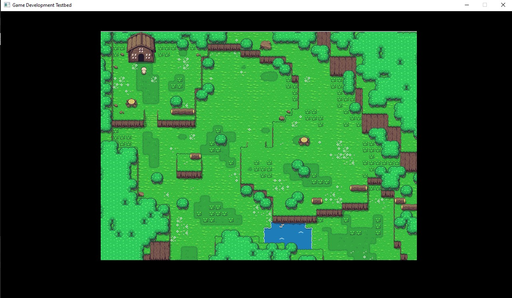

Handout
If you want to try and test PVS-Studio keep reding this document.
Your goal with this exercises will be to try and solve some code problems with the help of PVS-Studio, if you need the program
go to the "How to use" tab.
As soon as you open the handout, if you try and compile it, you will be presented with a black screen like the image below without music or textures, that's a problem!
At the end of this handout you should have something like the image below, of course, if you can't manage to complete all the TODOs, you can always check the handout solution, but it's highly recommended that you at least try and do the handout TODOs!
Where to find the handout and the solution
• You can find the handout and the solution, please head to my releases page here
• If you want the link directly to the handout so you can start with the TODOs click here
• If, instead, you want the link directly to the solution, click here
TODO 1
• Realize a analysis for a single file to see if there's any potential errors. (Don't worry if you don't find any, you're lucky then)
• Realize a analysis for the whole solution to see if there's any potential errors.
TODO 2
• Supress the 2 warnings that warn you about "Initializing variables".
• (Optional) Check if you have correctly supressed the messages in the "supress messagess..." option
TODO 3
• Solve the problems present in the Audio.cpp file.
TODO 4
• Solve the problems present in the Scene.cpp file.
TODO 5
• Solve the problems present in the Player.cpp file.
TODO 6
• Check if the game works, you should hear a music and see the map with the character in it. If you made it to here without using the solution, congratulations!